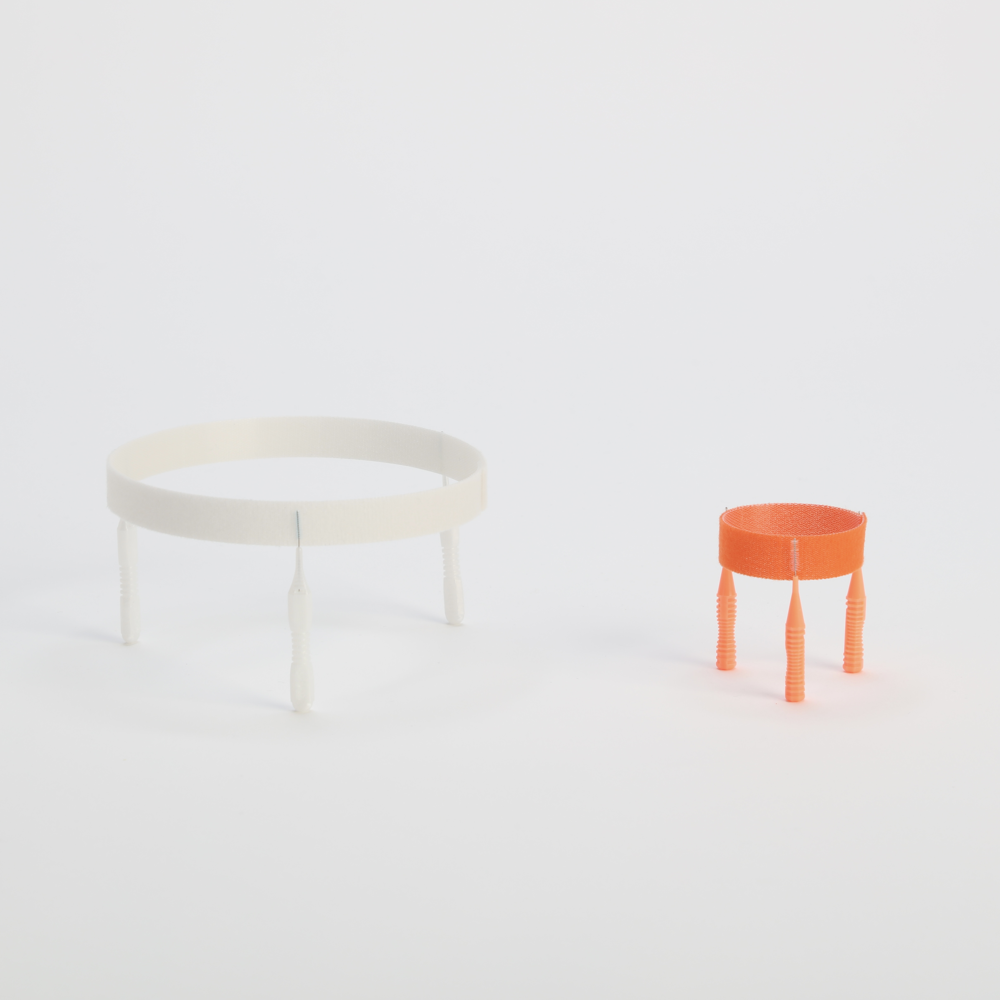

自立するかたち
学部3年次の演習授業「コンストラクション」での制作物 歯間ブラシと結束テープの性質を組み合わせ、自立するかたちを構成。
[Construction]
Construction : Nozomi Terashima
2024


学部3年次の演習授業「コンストラクション」での制作物 歯間ブラシと結束テープの性質を組み合わせ、自立するかたちを構成。
[Construction]
Construction : Nozomi Terashima
2024
